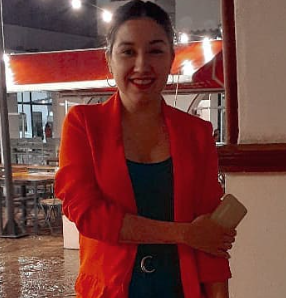

Hello! Soy Georgina
Un poco sobre mí..
Mi nombre es Georgina Costilla, tengo 32 años; el año 2021 me recibí de Técnica Universitaria en Ciencias de la comunicación social y actualmente estoy escribiendo mi tesis de Licenciatura en la UNT; de manera paralela en el año 2020 empecé mis estudios de Programación en la UNT - FRT y hace relativamente poco tiempo gane una beca, en programación full stack en Rolling Code School🚀 Mi objetivo en lo académico, siempre fue tratar de fusionar los conocimientos adquiridos en Comunicación y Programación, tanto para mi crecimiento personal, profesional y en un futuro en lo laboral.